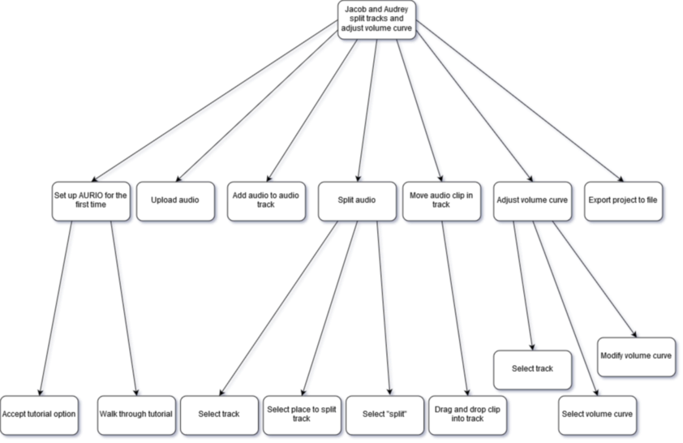

AURIO™
Developed by Project JAGER
Welcome to AURIO™
We are the world's leading manufacturer of the simplistic Digital Audio Workstation (DAW), AURIO™. The AURIO™ workstation is like no other DAW available on the market.
Carefully designed from start to finish by the industry's finest computer scientists, all of who graduated from the cutting-edge University of Victoria, AURIO™ will forever change the way you produce music.
Who is AURIO™ for?
We believe that AURIO™ is made for everyone.
Beginners
Never used a DAW before? No problem. Start with our recommended simplistic interface, then add the features you want when you need them!
Intermediate users
Browse through a catalog of features and add the ones you want. Dive straight into your next project with ease.
Advanced/Professional users
Already know what you need? Simply install your desired plug-ins and get back to working on your next masterpiece. AURIO™ also allows for layout customization, so you can feel at home right away.
Project Phase 1
Introduction + Mandate
The purpose of AURIO™ is to create a simplified DAW that gives the user control of their desired experience. The goal is to provide users of DAWs (from beginner level up to advanced) with a "less cluttered" experience while using audio editing software. Current software on the market requires a lot of learning before being able to use extensively.
Project Definition
Team JAGER will conduct extensive research on user interaction with Digital Audio Workstations, to create the best user experience. We will be completing 4 milestones over the length of the term. Our team will be required to design, implement, and evaluate a prototype user interface for our proposed project, AURIO™.
Project Objectives
Our goal is to provide users with an empowering experience. We started with a basic DAW that is simplistic in design, with an easy to use, easy to learn interface. To build upon this, creators will be able to easily download desired plug-ins to enhance their experience. Simply browse through a library of provided and user created plug-ins, install the ones you need, and immediately get back to working on your creation! By eliminating the hassle of hiding undesired features, creators will have a clean screen to focus on their content, not their workstation.
The problem with current DAWs is that they are unnecessarily complex for the majority of users. AURIO™ provides users with only the features they need. No more scouring through countless menus, help sites, and forums.
Motivational Scenario
Reginald, a.k.a Mixmaster Reggie-Nald, is an up and coming electronic music producer in Victoria looking to drop 2019’s hottest new mixtape. Unfortunately, Reginald has never used any audio-editing software before in his life. He buys a variety of DAW software, looking to mix some of his favourite tracks with his own collection of sound recordings. As soon as he opens up his new DAW however, he is bombarded by a jungle of menus, buttons, and sliders, none of which he knows a thing about. After an hour of trying to figure the software out, with many trips to its meager “Help” menu, Reginald starts to feel the frustration set in. “Why does every DAW I try look like it’s designed for a nuclear physicist?” he asks himself in exasperation. “Why can’t there be a DAW that regular people can understand from the get-go?”
Usability Goals
- Effectiveness: At its core, AURIO™ should be a functional, well-oiled DAW. Simplicity and ease of use mean nothing if the underlying software doesn’t work like it should.
- Learnability: Many DAW’s are notorious for their steep learning curve; AURIO™ should be the solution. We want AURIO™ to be user friendly and intuitive, even for someone totally unfamiliar with the idea of a DAW.
- Utility: AURIO™ prioritizes being beginner-friendly, but this should never be conflated with being “dumbed down”. AURIO™ should provide advanced functionality to those who seek it, supplementing with plugins when needed.
User Experience Goals
- Enjoyment: AURIO™ shouldn’t just be a DAW, it should be an experience. Editing audio should be a seamless session of creativity, where your DAW is helping you instead of standing in your way; AURIO™ should reflect this notion.
- Aesthetically pleasing: It goes without saying that AURIO™ should be aesthetically pleasing software. To quote The Zen of Python, “Beautiful is better than ugly. Simple is better than complex. Readability counts.”
- Inspires creativity: Buried under the goals of user-friendliness and simplicity lies one simple idea: creativity. AURIO™ should inspire users to think more creatively about their audio editing and music production, instead of thinking about how to navigate a complicated UI.
Key Stakeholders
With AURIO™, we aim to cater to a number of various user groups. Whether or not you are a total beginner to music, have played an instrument for a couple of years, or are a professional producer, AURIO™ is designed to accommodate your individual needs.
Key stakeholders of the AURIO™ audio workstation include:
- users who are not familiar with DAWs and are looking to get started
- users who are comfortable with another DAW (or DAWs) and are looking to switch to AURIO™
- users who just want to "mess around"
- users who are looking to use AURIO™ to produce professional/commercial tracks
- users who are newcomers to music (ie. do not know music theory and do not play any instruments)
- users who have studied music academically or who are already familiar with one or more musical instruments
Assumptions
At Project JAGER, we don't like to make assumptions. However, some are unavoidable in order to make each user's experience a good one.
We assume that our users are interested in music and learning a bit about music theory and music production. Although it is our core belief that AURIO™ is easy for beginners to use, there will always be a slight learning curve when beginning to produce music.
We also assume that our core users are comfortable using technology. What we mean by this is users are able to, for example, open and close desktop applications, and are generally able to move around a new application with ease. We hope that this does not discourage users who may not be comfortable with software; we make this assumption because Digital Audio Workstations are exactly that -- digital, and as such they require a base level of technological maneuvering.
User Profiles
A few main user profiles for AURIO™ are:
- audio editors
- complete beginners
- intermediate musicians
- advanced producers
Audio Editors
Audio editors are those who require a very simple audio editing program to split or loop music clips. An example of a member of this group is a YouTuber who is looking to simply cut a certain part of a song for their intro music. Another example would be a dancer who is looking to merge two songs together so that one fades into the next so they can choreograph a piece. Audio editors are not looking to get into the more complex or powerful features of music production, and are not looking to create their own music. They simply need an intuitive interface to edit existing music clips.
Complete Beginners
Complete beginners are those who have little experience with music theory or who do not play any instruments. These are users who haven't played or made music since grade 6 band, but are looking to reignite their passion and get into music production. These users are unfamiliar with technical, but are ready to learn in order to create their own music.
Intermediate Muscicians
Intermediate musicians are those who play one or more instruments or have training in music theory. They are new to music production but understand many of the underlying concepts, such as reverb, delay, tempo, key, panning, and other filters. They may already have an idea of what kind of song they would like to produce, but do not yet know how to go about doing so in a DAW.
Advanced Producers
Advanced producers are professional or hobbiest producers who are very familiar with one or more DAWs. Perhaps they already produce using Ableton, Logic, or FL Studio, but are looking to try out something new. They already know which parts of a DAW they use the most, how they like their workflow to be, and have a very concrete understanding of what a DAW needs to provide in order to satisfy their user needs.
User Requirements
- ability to record from a michrophone
- integration for MIDI keyboards, both recording and playback
- waveform display for each track
- independent volume and panning control for each track
- basic library of sounds
- basic library of filters
- basic filter curve functionality
- abiliy to view and adjust tempo of entire song
- a workspace to view each track
- ability to add, delete, and modify tracks
- ability to split and join tracks
- ability to loop tracks
- friendly, intuitive, non-cluttered interface design
- ability to walk through a beginner tutorial
- ability to differentiate between audio and MIDI tracks
- easily accessible menu of audio samples and loops organized by genre (Metal, House, etc.) and type ( ex. woodwind, percussion, brass, strings, etc.)
- drag and drop functionality for adding loops and samples
- track creation and deletion
- ability to undo, redo changes
- ability to edit filters using dials or filter curves
- ability to select different file qualities for exports
- ability to enable hover-description helper panel
- ability to search filters
- ability to search plugins
- ability to install and uninstall plugins
- ability to configure default settings
- ability to customize layout
Scenarios
Audrey and Jacob
This scenario includes:
- audio editors
- beginner tutorial
- splitting and joining clips
- adjusting curves
- exporting audio
Jacob and Audrey are talented circus performers preparing an act for an upcoming show. Their act consists of three separate parts: an upbeat beginning, a slow middle, and a marvelous finale. They already have their music picked out and just need a simple editor to splice together the clips and have them fade from one to the next. Neither are trained in music, nor do they have any interest to be. They also are not very comfortable using complex technology, but they know how to open and close a program on their computer. Upon Googling for the simplest audio editor, they come across AURIO™ and like it’s simplistic design. They download AURIO™, open it up, and select “Audio Editor” as their start configuration. Seeing that there is the option to go through a beginner tutorial, they click on it and walk through the brief tutorial on how to add, delete, split, and join tracks, also learning how to adjust the volume of each track. They drag and drop their music into each track, and adjust the volume of each using the volume curve so it sounds like the music fades from one song to the next. Lastly, they export their song to a .mp3 file and are happy with the result.
Axl + Rose
This scenario includes:
- complete beginners
- recording audio
- adjusting volume
Axl and Rose are a brother and sister, aged 6 and 8, who want to record themselves singing Happy Birthday for their grandmother, who lives in Lithuania. With their parents’ help, they open up AURIO™ on their family computer, and plug in a microphone. Neither Rose nor Axl has much experience with DAWs, but thanks to AURIO™'s simple and intuitive user interface, they find the record button, and record themselves singing their song without a problem. Afterwards, they realize they were standing a little too far from the microphone, and that the resulting track is much too quiet. To fix this, they increase the track’s volume, and after giving their song another listen, decide they’re happy with the result. They save their composition in an email-friendly format, close up AURIO™, and send their song off to Grandma.
Reginald
This scenario includes:
- intermediate users
- installing plugins
- requesting help
Mixmaster Reggie-Nald is back, and this time he’s armed with AURIO™. After such a disastrous experience with other DAWs, Reginald is hesitant to dive back into the world of music editing, but decides to give AURIO™ a swing, at the recommendation of several of his friends. Reginald sits down at his laptop and opens up AURIO™, but quickly realizes that he doesn’t have any recording equipment of his own! Thankfully, with AURIO™’s extensive built-in library of plugins, Reginald installs a few which suit him to his liking. Unfortunately, he is unable to figure out how to uninstall one he dislikes. Using AURIO™'s 'Help' tool, he is able to hover over the plugin and find out which button is the uninstall one. Just a few short hours later, Reginald leans back in his chair and revels in his work: an absolute banger of a track (or so he thinks).
Elias
This scenario includes:
- intermediate users
- installing plugins
- using filters
Elias is the lead singer and producer of Portland-based alternative rock band Profound Cactus. Elias has worked with a wide range of DAW software over his years as his band’s producer, and knows his way around a mixing console. Since switching to AURIO™ a few months ago, Elias has been quite happy with the results, but for his band’s new upcoming single Space Flower, he just can’t find a filter in AURIO™ that achieves the sound he’s looking for. Knowing that AURIO™ is a plugin-based DAW, Elias opens up TWYX, AURIO™’s plugin sharing platform to try to find a solution. After a few minutes of searching, Elias finds an “Advanced Filters” plugin that adds dozens of extra filters on top of AURIO™’s modest default selection. Adding the plugin, Elias sets off again looking for the perfect sound for Space Flower, armed with a far wider selection of filters to choose from.
DJ Slayer
This scenario includes:
- advanced producers
- customizing layouts
DJ Slayer is a prominent figure in the underground metal-electronic music scene. He is praised for his quality of production and the ingenuity of his beats. However, DJ Slayer is looking for a new tool for his arsenal: something quick and intuitive to either prototype new melodies or rhythms, or quickly edit existing software with a variety of imported plugins. Being used to other DAWs, Slayer might yearn for a certain interface when producing music. With a few drags, drops and setting changes he is able to customize AURIO™’s layout and now has his loops, plugins and editing windows where he prefers them.
Jamie
This scenario includes:
- complete beginners
- undoing and redoing
Jamie is a 27-year old ASMR YouTuber, and is planning on creating custom audio for her youtube channel. She is very indecisive. First, Jamie downloads AURIO™ from the dedicated website, going through a brief installer and setup. She finds a library of loops and settles upon a mainline beat as a softrock drum beat. She adds it to her workspace in a new track. Then she decides she doesn’t like it. She deletes it from the track. Here, her indecisiveness kicks back in and she thinks she wants the track back. She undoes her action and the beat reappears in the track.
Hierarchical Task Analysis
Jamie
Jacob and Audrey
Reginald
DJ Slayer
Axl and Rose
Contributions
John
- requirements
- scenario and HTA for Jamie
- AURIO™ startup configurations settings
- workflow optimization
Adeline
- website development, design and population
- key stakeholders and main goals section
- scenario (Jacob and Audrey)
- some requirements
- team bios
- editing
Graeme
- usability and user experience goals
- some requirements
- some scenarios
- some HTA flowcharts
- editing
Ethan
- project introduction
- project mandate
- HTA for Reginald
- editing
Ryley
- scenario for Slayer
- some HTAs
- proof reading and editing
Phase II: Design
Introduction
The number one goal of AURIO is to provide users with a DAW whose interface is intuitive and easy-to-learn. For us, “easy-to-learn” means that there are no critical commands buried three-layers deep in a drop-down menu, icons are preferred over extensive text, and the text that is required is not overly technical in terms. This allows users who are totally new to music production to begin mixing some beats well within a half-hour.
In addition to paring down the steep learning curve that most DAWs on the market today come with, AURIO aims to keep current DAWs’ complexity through its plugin-market, TWYX. Thus, more advanced users are able to easily add more functionality beyond the pre-installed basics. This will let advanced users match the complex functionality of other industry-standard DAWS -- but in a way that is much easier to use. AURIO’s TWYX design achieves just that. With a clearly-marked drop-down labeled “plugins”, the user can easily view their current plugins, uninstall any they no longer want, or open the online plugin-market, TWYX, to shop for new ones.
AURIO goes beyond simply providing a functional interface, however. User experience is valued just as highly as usability at Project Jager; as a result, AURIO is engineered to not only be a DAW but a creative experience. While the colour palette of AURIO is not yet fully refined, it is meant to be aesthetically pleasing while maintaining readability. For this reason, AURIO uses mostly neutral colours like greys, blacks, and white, and accent colours sparingly to draw the user’s attention to important items or changes on screen.
Conceptual Models and Interface Metaphors
Our Conceptual Model
Many of AURIO’s tools are based on the conceptual model of direct manipulation. The most prominent examples used in AURIO are:
- Sliders
- Volume adjustment
- Zooming in/out tracks
- Filter curves
- Dragging and Dropping
- Directly add filters or sounds from the library by dragging them into the track window.
- Moving track cursor to specific locations.
AURIO primarily makes use of the conceptual model of “Giving Instructions”. Rarely do you find a facet in AURIO that tells the user what to do. Even in the tutorial, the AURIO experience is user directed, allowing creativity of the user to shape building and recording music. Due to the freedom to creativity that AURIO encourages, there is a plethora of options and commands the user can instruct the system to perform. Some specific examples of the Giving Instructions conceptual model are found in:
- Pressing the record button and recording audio
- Exporting the track to an audio file and choosing the file format
- Creating new tracks with specified MIDI instruments
AURIO also utilizes a micro conversational model. While using the application, users are prompted with text depending on what is being attempted. For example, if the user has not saved the project in a while, a non-intrusive prompt will appear on screen asking the user if they want to save the project. By making use of these polar questions, users have an effective “conversation” with AURIO without the annoyance of a chatbot or virtual assistant. Polar questions are also much more reliable as they have predetermined outcomes, as opposed to the complexity of having to parse multiple input arguments provided to the system. Thus, the user knows exactly what is going to happen for each of the choices provided.
The last conceptual model that AURIO implements is that of “Exploring and Browsing”. The libraries of AURIO are designed to allow new users to explore the variety of sounds and filters that they have at their disposal, while also allowing experts to quickly browse for what they need. Categories neatly divide the various items and search functions allow the user to narrow down what they are looking for. Additionally, AURIO features the TWYX plugin platform, which allows the user to browse and collect MIDI instruments, sounds and filters that they can then use in their projects. The browsing of the TWYX platform operates similarly to other online storefronts users may already be accustomed to, but ultimately TWYX is like browsing through a mail-in catalog. Handy shortcuts such as the search function elevate the browsing experience to be quick, specific and memorable. If the user wants to explore the TWYX page, handy tabs separate information into content that may be relevant to the user, such as “Featured”, “Top” and “Genres”.
Interface Metaphors
AURIO’s workspace user interface is closely built on the physical desktop interface metaphor. The focal point of the user’s work, which is often the track display window, is always centered in the middle of the “desk”; most actions the user takes when editing are based on highlighting a track, then applying some tool located on the outside edges of the screen. This keeps with the desktop metaphor; any tool on the desk that is not currently being used is kept off to the side, away from the central workspace.
Furthermore, we could consider TWYX, AURIO’s plugin platform, to be additional storage space nearby the desk. There might be additional tools being stored that you don’t necessarily need right now, but in the case where the tools on your desk are insufficient for some task, you have the option to dig through the storage looking for something extra that could help. This has clear parallels to a user navigating to TWYX to look for extra functionality they would like to add to AURIO.
Additionally, TWYX can be considered as a digital music specific library. Each plugin has specific tags associated to it, for example genre and sound type. This gives the feeling of a true library where users can easily visit the “section” of plugins, presented alphabetically like a shelf for easy navigation. To be able to use a plugin users are required to “checkout” the plugin. Then, when they no longer want the use of a plugin, they “return” it back to the library. The user will be able to see what they have “checked out” to stay on top of installed plugins.
Configuration
Requirement: Ability to walk through a beginner tutorial
Requirement: Ability to walk through a beginner tutorial
When AURIO is first launched, the user will see the home screen with a pop-up asking if they would like to walk through a tutorial for beginners. The pop-up is displayed in the middle of the screen and the background is greyed out. This ensures that the tutorial pop-up is the main focal point. The pop-up also mentions that the tutorial can be viewed at any time in the future from the home menu.
Should the user select “YES”, AURIO will walk them through the basics of creating a new project; adding tracks; recording MIDI and audio; adjusting track volume, panning, and muting; browsing the library of sounds and filters; and saving the project. If the user selects “NO, THANKS”, the pop-up will disappear and they will be able to see the home screen underneath, which is described in more detail below.
The tutorial is highly interactive. A small pop-up or tooltip-like figure will appear beside a button and explain what that button does. The user will then be asked to click the button or interact with the window in order for the tutorial to progress. Buttons will be highlighted in light blue and the highlight will fade in and out to draw attention to the user, which is especially helpful for smaller or harder-to-find items.
When the user has completed the tutorial, they will be back at the home menu without the tutorial pop-up. Here, they will be able to choose to create a new project, open an existing project, walk through the tutorial again, or view AURIO’s settings. Each of these choices is encapsulated in a large, square panel or tile. Tiles were selected to reinforce the idea of ease-of-use; the user only has four choices and thus are less likely to become overwhelmed. Additionally, large rectangular shapes are very familiar to most people as they exist in many human structures (drawers and cupboards, elevator buttons, windows and doors). This familiarity may assist users in recognizing that each tile will take them down a unique route in the program, akin to how each drawer in a home is unique in what it contains, and each door will bring a person to a unique room.

Because everything covered in the tutorial is written about lengthily in the rest of this document, we will omit a full tour of the tutorial as it would be mostly redundant.
Workspace
The workspace is designed to reduce the clutter of most other DAWs. Text is omitted where icons are just as explicit (such as the play, jump to beginning, and jump to end buttons). The screen is split into three main sections: the Menu bar at the top, libraries and filters on the left-hand side, and the primary workspace in the middle/right. Bright colours are used to draw attention to the most important items in the workspace such as MIDI and audio clips, the marker which indicates where the user is in the project, and record buttons.
Requirement: Ability to differentiate between audio and MIDI tracks
Audio tracks are denoted with an ‘A’ to the left of the track name, while MIDI tracks are denoted with a ‘M’.
Requirement: Main Menu bar
The main Menu bar is a horizontal list of drop-downs that sits at the top of the screen. It will contain the items “Home”, “File”, “Edit”, “plugins”, and “Help”.
Clicking on “Home” will bring users back to the home screen. If their project has not been saved, a pop-up will appear asking the user if they would like to save their work first. The background will be greyed out so as to draw the user’s attention to the dialogue. The user can then select “YES”, or “NO”.

File Menu
The “File” button leads to a drop-down list of “Save” (control-S keyboard shortcut), “Save As”, “Open Recent”, “Open…” (control-O), “Export”, and “Exit” (control-Q), in that order.

Selecting “Save” will save the current project, unless this is the first save, in which case a “Save As” pop-up will appear. Selecting “Save As” will bring up a window where the user can select a file location and rename their project. The user can then select “Save” to save, or “Cancel” to get rid of the window without saving.

If the user hovers or clicks on “Open Recent” from the “File” menu, a list of recent projects will be displayed, organized from most recent at the top to oldest at the bottom. The user can then click any of these projects to load the project into the workspace. Again, if their current workspace has not been saved, they will asked if they wish to save first.

If the user selects “Open..”, a window will appear where they can select a project (with the appropriate extension). From there, they can either select “Open” to load the project into the workspace, or “Cancel” to get rid of the window. Again, if their current workspace has not been saved, they will asked if they wish to save first.
If the user selects “Export”, a window will appear where the user can choose which bars they wish to export, the name of the file, and what file type they wish to export to. There will be a checkbox that should be checked on default; it is checked when the user wishes to export their entire project. Below the checkbox is a box which allows users to select specific bars of the project to export. This box should be greyed on whenever the checkbox is checked. From this window, they can choose “Cancel” to cancel, or “Export” again, which will bring up a window similar to “Save As” that allows the user to select the file location and change the name of the file they are exporting. Again, they are able to select “Save” or “Cancel” from this window.

Lastly, if the user selects “Exit”, the program will exit (ie. all windows will close and the program will terminate). Again, if the user has not saved their workspace, they will be asked if they wish to save first.
Edit Menu
The Edit menu consists of drop-down items “Add audio track”, “Add MIDI track”, “Delete track”, “Split track” (control-T), “Join clips“, “Copy” (control-C), “Duplicate” (control-D), “Cut” (control-X), “Paste” (control-V), “Undo” (control-Z), “Redo” (control-Y), “Snap to Grid”, “Enable Quantization”, and “Quantize” (control-W), in that order.

Requirements: Add, delete, split, and join tracks
If the user selects “Add audio track”, an audio track will be added to the workspace. It will be empty and it’s default input will be the built-in computer microphone (if any), or the most-recently plugged in microphone.
If the user selects “Add MIDI track”, a MIDI track will appear in the workspace. It will also be empty and it’s default input will be the computer’s keyboard (if any), or the most-recently plugged in MIDI controller.
If the user selects “Delete track” (or presses backspace or delete on their keyboard) and no track is selected in the workspace, a pop-up will appear saying “Cannot delete track: No track selected.”

If a track is selected when the user selects “Delete track” (or presses backspace or delete on their keyboard), a pop-up will appear asking the user if they are sure they wish to delete the track, and the track name will be given.

If the user selects “Split track” and no track is selected in the workspace, nothing will happen. If the user selects “Split track” when a track is selected, and if the marker falls on a clip in that selected track, then that clip will be split into two sections about the marker.


If the user selects “Join clips”, the program will enter Join Mode. Once Join Mode is on, the item “Join clips” will become “Exit join mode” in the menu list. In order to exit Join Mode, the user can press the escape character on their keyboard, or select “Exit join mode”. Users can then select any two adjacent clips in a track and the program will join the clips into one and exit Join Mode. It is important to note that users cannot select clips across multiple tracks, or which are not adjacent. If the two clips have empty space between them, the empty space is included in the join, but will remain empty (no midi, no audio) in the merged clip.


During Join Mode, when a user hovers over any clip, the clip will become outlined in light blue. When the user’s mouse moves away from the clip, the highlight will disappear.
Requirements: Cut, copy, undo, and redo changes easily
If the user selects “Copy” and no clip is selected, nothing happens. If there is a clip selected, that clip will be copied to the internal software.
If the user selects “Duplicate” and no clip is selected, nothing happens. If there is a clip selected, a second copy of that clip will appear directly adjacent to the selected clip, and the copy will be automatically selected. If the copy of the clip overlaps with another clip, it will delete all parts of the other clip it overlaps with.


If the user selects “Cut” and no clip is selected, nothing happens. If there is a clip selected, that clip will be deleted from where it is and copied to the internal software.
If the user selects “Paste” and there is no clip copied in the internal software, or no track is selected, nothing happens. If there is a clip and a track is selected, that clip will be pasted to the track, and the beginning of the track will start where the marker lies.
“Undo” and “Redo” act identically to how they perform in many existing programs. “Undo” will undo the last event performed, while “Redo” will redo it.
If the user selects “Snap to Grid”, then snapping to the timeline will be enabled, as outlined in Settings, and the menu item will show a dot beside it to signify that snapping to grid is on. When clicked again, snapping to grid will be disabled and the dot will disappear. Similarly, if the user selects “Enable Quantization”, then quantization will be enabled, as outlined in Settings, and the item will become “Disable Quantization”. If the user selects “Disable Quantization”, quantization will be disabled and the item text will revert to “Enable Quantization”.
Lastly, if the user selects “Quantize” or uses the keyboard shortcut control-W, and if a MIDI clip is selected, then the MIDI notes of the clip will be quantized as per the quantization settings (outlined in Settings).
Plugins Menu
The plugins menu is a drop-down list with the items “Open TWYX”, and “View Installed Plugins”. If the user selects “Open TWYX”, a separate window will appear with AURIO’s plugin shop, TWYX.

Requirement: Ability to uninstall plugins
If the user selects “View Installed Plugins”, a separate window will appear with all plugins which the user currently has installed. The name of each plugin will be listed along with a button beside each plugin which reads “Uninstall”. This allows users to easily uninstall plugins without having to hunt down specific files or worry about dependencies.

Help Menu
The Help menu is a drop-down list with the items “Turn on Help” and “Tutorial”.
Requirement: Ability to enable helper panel
If the user selects “Turn on Help”, a small panel will appear in the bottom left-hand corner, pushing the libraries section up. Additionally, the “Turn on Help” item will be changed to “Turn off Help”. Once Help mode is on, if the user holds down the alt key on their keyboard, their mouse will turn into a small question mark. If the user clicks on a button, item, or area of the workspace with the question-mark cursor, information is displayed about that object in the panel. To exit Help mode, the user can enter the Help menu and select “Turn off Help”, or click the “X” symbol on the Help panel.

If the user selects “Tutorial”, a pop-up will appear asking the user if they would like to walk through the beginner tutorial. The user then has the choices of “YES” or “NO”.
Requirement: Ability to view and adjust tempo of the song
In a very clear box in the top right hand corner of the screen, alongside our play and pause buttons, the beats per minute (BPM) and time signature are displayed. The values are modifiable by clicking them.
Inside the tempo box is a small metronome icon encapsulated in a button. When pressed, the metronome is turned on, which can be easily identified as the button will have an “indented” or “pressed” looked. When toggled off, the metronome will be turned off and the button will no longer look pressed.
Tracks
Each track has a “Track Master” section on the right hand side, which is easily identifiable as it is darker in colour compared to the rest of the program. Here, the user can change the track’s name, mute the track, show the filter curves, begin recording, and change track input.
Requirement: Ability to record MIDI and audio
Users must be able to record both MIDI and audio. This is done by clicking on the record button on each track in the workspace. Separate record buttons for each track were chosen instead of one large record button because one recording button can result in ambiguous situations where the program must ask for clarification on what is being recorded. To remove any possibility of ambiguity surrounding recording, each track has a corresponding record button.
Once the user clicks on a record button, that track will be highlighted in light blue and the record button will begin to flash. Additionally, the play button at the top will turn into a stop button, which is also highlighted, further notifying the user that they are now recording. The track marker (shown in cyan in the image above) will mark where the user is currently recording. In this case, the user has recorded about two bars of a MIDI track named “full yeetus”, and will continue to record from left to right until the user either:
- clicks the stop button at the top
- clicks the recording track’s record button
- presses the spacebar (analogous to clicking the stop button)
Note that the record button is the standard “red dot” icon; this is used for universal recognition.
Each track has a combobox or drop-down menu specifying the track’s input. On audio tracks, this will be microphones that the computer has detected (either external or built-in). For MIDI tracks, this will be any detected MIDI instruments, such as a MIDI keyboard. Users can select the input they wish to record from.
When instruments or audio input is first detected by AURIO, a small notification will appear at the very bottom of the window. In this manner, the notification is unobtrusive but the user still receives feedback that their recording device has been recognized.

Requirement: Independent volume and panning control for each track
Volume can be adjusted for each track using the horizontal slider with a “-” and a “+” on either side of it. Sliding the slider toward “-” will decrease track volume; sliding toward “+” will increase track volume. Similarly, each track’s panning can be adjusted as well using the horizontal slider with “L” and “R” on either side of it. Sliding toward “L” will pan to the left; sliding toward “R” will pan to the right.
Requirement: Ability to mute tracks
Tracks can be muted by toggling the sound icon in their Track Master section. A sound icon which is not crossed out indicates that the track is not muted. When the icon is toggled, the sound icon becomes crossed out which indicates that the track is now muted.
Requirement: Ability to adjust filters through an intuitive filter curve
In the Track Master section for each track is a checkbox. When the checkbox is checked and a filter is selected for that track, the filter curve for that track will be shown on top of the track’s clips. The default curve will be a flat line spanning the whole track, which represents the numerical value of that filter. If a user drags the curve upward, a new point will be created where the user dragged. If the user double clicks any point, it will be deleted.

Requirement: Waveform display for audio tracks
Each audio track will be represented with visible audio waves while MIDI tracks will be represented as lines showing the length of notes as well as the tone in a large window in the center of the workspace. A scrolling marker (coloured cyan in our example) will lay on top of the all tracks to keep time position. Above the multiple tracks will be a the timeline, where each vertical line represents the end and beginning of a single bar. The marker can be dragged in the main track window to change the position as well.
The track window also allows automatic and manual zoom functionality. If users add new tracks, the new track would be added to the bottom of the existing tracks and the tracks will visually compress vertically in order to “make room” for the new track. This would stop when vertically compressing the tracks would make the tracks too small to practically work with, in which case the new tracks will not compress the others, and could be seen by vertically scrolling through the track window.
The entire timeline and workspace can be condensed and expanded horizontally by manipulating the slider just above the timeline. Sliding toward the minus sign (“-”) will condense the timeline such that bars are shown in much less space horizontally and the bar indicators are much closer together. Oppositely, sliding toward the plus sign (“+”) will expand the timeline horizontally, such that clips occupy more space horizontally and there is more space between the bar indicators.


Requirement: Ability to easily loop tracks
When the user’s mouse hovers on the upper right-hand corner of a clip, it will turn into a repeat symbol (a circular arrow which points toward itself). Once the cursor has changed to the repeat symbol, the user can drag that corner of the clip horizontally to continuously repeat or loop the clip.


Quick Menu
At the top of the workspace are the jump to beginning button, play/stop button, and the jump to end button, shown respectively from left to right. The “jump to beginning” button moves the marker to the very beginning of the project (ie. the beginning of the first bar). The “play/stop” button will show a play icon when the project is not being played and a stop icon when the project is being played or a track is being recorded. The “jump to end” button will move the marker to the end of the last clip.
Below these three buttons lies the Quick Menu. The Quick Menu is a small collection of buttons which perform actions otherwise found in the Menu bar or by keyboard shortcuts. For example, the Quick Menu contains a button to “Add Audio Track”. This can also be achieved by accessing “Edit > Add Audio Track” from the Menu bar. The Quick Menu contains the following buttons: “Add Audio Track”, “Add MIDI Track”, “Delete Track”, “Split Track”, and “Join Tracks”.
The Quick Menu is designed for easy access to common actions. It provides a simple interface for beginners to quickly find actions they wish to perform, especially since beginners may not know where to look in the Menu bar to find these items and they likely will not know the keyboard shortcuts.
MIDI/Filter Section
The MIDI/filter section is located at the bottom of the window below the last viewable track. It contains two tabs: MIDI and filters. When the MIDI tab is chosen and a MIDI clip is selected, the MIDI for that clip is displayed in the section and the user is able to modify the track’s MIDI by hand (without an external MIDI controller) by clicking in notes. If the user clicks a spot where there is no note, a new note will be added with length of the unit of quantization (as specified in Settings). The user can drag the ends of the note to change the note’s length. The user can also drag the note to change its pitch. If the user double-clicks on an existing note, the note will be deleted.
The user is able to scroll horizontally to view all the MIDI notes through a scroll bar at the bottom. The scroll bar only becomes visible when the user’s mouse hovers over it.
When the filter tab is chosen and a track is selected, that track’s filters are displayed in the section side by side. These filters can be modified through their sliders and dials in the section.
Requirement: Ability to edit filters through a simple dial/slider system
Filters come with their own properties, which can be easily manipulated through a series of dials, sliders, and drag-able components. For example, a simple reverb filter has a slider to apply the filter from 0% to 100%.
Plugins
Requirements: ability to search and install plugins
If a user desires a new plugin outside the existing functionality of the base AURIO download, they can go to the “plugins” menu and select “Open TWYX”. This takes the user to a “storefront” of compatible plugins and filters for AURIO.
Each store contains short lists of the following categories: “Featured”, “Highest Rated”, “Most Downloaded”, and “Genre”. At the top right of the page is a search tool which accepts the names of the plugins or other descriptive keywords such as “latin” or “jazz” to search for items.

The user can click the name of a plugin to be brought to a specific page for the item. This page contains information about the item and the option to install the item. Pressing install on the item’s page will add the item to the user’s library, which is now able to be used in any of the user’s projects.

The main purpose of TWYX is to allow easily accessible extensions to the AURIO experience for intermediate and advanced users who desire something more, without taking away the simple, uncluttered experience for pure beginners. Even so, the storefront should be easy to navigate for beginners who are eager to learn, and who need a simple system to get the sounds they want.
Libraries
The Library section is located on the left-hand side of the window. Here, the user will find two tabs: one labeled “Library” and one labeled “Filters”.
Requirement: Ability to easily access audio samples and loops which are organized
Selecting the Library tab will open up the sound library. Any sounds that are pre-installed, installed via plugins, or installed by the user externally will show up in this tab. These sounds are organized by type (eg. Strings, Synths, Loops, FX, etc.) and alphabetically in an accordion-style layout, with the exception of Misc placed at the bottom. When the user selects the header (eg. Strings), the section with expand to show the sounds categorized under that header (eg. Viola Solo and Viola Section Legato). Clicking on the header will toggle this expansion.
If there are too many sections and/or sounds to comfortably fit in the panel, a scroll bar will appear and the user can scroll down to view the rest of the sections and/or sounds.
Requirement: Basic library of sounds and ability to search sounds
AURIO comes with a basic library of sounds already installed for ease of use. This way, beginners do not already need to have sound packs downloaded in order to begin creating music.
In the Library tab, there is a search bar located at the top of the section, just under the tab header. Here, users can search downloaded sounds by type and keyword.
Requirement: Basic library of filters and ability to search filters
Selecting the Filters tab will open up the filters library. Any filters that are pre-installed or installed via plugins will show up in this tab. Filters are organized alphabetically from A to Z. If there are too many filters to fit in the panel, a scroll bar will appear and the user can scroll vertically to view all filters.
AURIO comes with a number of common filters pre-installed. These include Audio Filter, EQ, Reverb, and Delay, among others.
Similarly to the library of sounds, there is a search bar in the Filters tab as well. Users can search for specific filters through keywords.
Requirement: Ability to drag and drop samples and filters
AURIO’s primary goal is ease-of-use, and what could be more intuitive than simply dragging something to its destination? Thus, AURIO is designed so that users can simply drag samples into their preferred track.
If the user drags a sound sample to an audio track, the track will become highlighted so that the user receives feedback on which track they are attempting to add the sample to. The sample will become a slightly transparent as the user drags it over the track; this allows the user to roughly see the length of the sample and place the starting point accurately on the track timeline.

Once the user lets go of the mouse (ie. stops dragging), the sample will appear fully coloured and labeled on the track timeline. If it overlaps with any other clips, the overlaps of the other clips will be truncated and the newly added clip will remain in its full length. If the user lets go of the clip anywhere that is not on an audio track, the greyed out block will disappear and nothing will happen.
If the user drags a sound sample to a MIDI track, the track will use the sound sample for its MIDI. A filter is automatically added that shows the audio waves of the sample and allows the user to select which parts of the sample they wish to use (by default, it is the whole sample).
If a user double clicks a sound sample and a MIDI track is selected, the selected track will use the sound sample for its MIDI. The same procedure is realized as when a user drags a sound sample to a MIDI track. If a MIDI track is not selected, nothing happens.
If a user double clicks a filter and track is selected, the filter will appear in the filter section for that track. If no track is selected, nothing happens.
Miscellaneous
Settings
The “settings” button in the home menu allows the user to configure certain parts of the DAW. Here, users can turn on or off “Snap to Grid” and adjust the intervals of the timeline (eg. 1 bar, half a bar, a quarter note, etc.). “Snap to Grid” allows users to align clips easily with the beginning or end of timeline interval. If the user moves the clip close to an interval start or end, the start or end of the clip (whichever is closest) will snap to the start or end of the interval.

Users can also toggle quantization in the settings menu. All MIDI that is recorded while quantization is on will fit itself to the unit of quantization (quarter notes, eighths, sixteenths, or thirty-secondths). For example, if the quantization unit is set to quarter notes, all notes recorded would snap to a length evenly divisible by a quarter note.
Users can also adjust the metronome volume. The horizontal slider under the heading “Metronome Volume” represents the volume, where sliding to the left decreases volume, while sliding to the right increases volume.
Users can also customize the quick menu from settings. This will bring up a pop-up where the user can drag multiple quick menu items to and from a virtual quick Menu bar. The user can close the window by clicking the “Click Window” button.

Contributions
Adeline
- Wrote most of the document
- Edited and made a bunch of mockups, specifically in the configuration section
- Did final lookover, editing, formatting, and upload to our website
Graeme
- A bit of preliminary specifications writing for the UI
- A pile of mockups: small changes to the default UI, some of the main Menu bar and their functionality, clip editing, everything about plugins+TWYX, settings menu
- Some of the writing on conceptual models/interface metaphors
John
- Preliminary design of Configurations mockup
- Preliminary design of Project Mockup
Ethan
- Wrote some interface metaphors
- Assisted in editing the website
Ryley
- Wrote some requirements in paragraph form
- Conceptual Models
Phase III: Prototype
Preface
While this report can be read as a standalone document, we encourage the reader to follow along with the online prototype demo! The demo can be found here.
Introduction
In this phase of development, our goal for AURIO is to begin bridging the gap between a static set of mockups and a functioning prototype. Since AURIO is a DAW, a natural first step for building a working prototype might be to implement some of its audio-based functionality; this is where we run into some difficulty. An overwhelming majority of current prototyping tools lack any sort of audio integration, Balsamiq Mockups included. Because of time and budget constraints at Project JAGER, we have made the decision to temporarily shelf audio integration for early AURIO prototypes. With this decision, we hope to be able to focus on creating a more cohesive and immersive prototype experience for potential users.
This aside, we can begin properly outlining the design of AURIO’s first prototype. In general, our goal for this phase is to begin implementing our user interface and some of the more basic functions described in the design phase. This includes menu and button functionality, as well as screen transitions when applicable. While these operations will be largely superficial, they provide users with a general sense of how it will feel to navigate AURIO once it is a finished product. In this sense, our style of prototyping for this phase will be mostly horizontal.
Additionally, we have made the decision to move away from using Balsamiq Mockups as we used in the design phase in favour of Figma. While Balsamiq is an effective tool for UI design, we felt it was lacking in terms of what it could provide for an actual working prototype. Switching to Figma gives us much more flexibility with both the aesthetics and user interaction of our prototype, with the end goal being better immersion and understanding of how AURIO will ultimately function. Furthermore, Figma is a web application, which allows us to be more adaptable in our version control, as well as being able to more easily share and demonstrate our prototype with potential users and investors.
Tools and Processes
Project JAGER decided to use Figma to construct a high fidelity prototype due to Figma’s easy-to-learn user interface, range of abilities (including vector graphics), collaboration features, and low cost (free!). Since Figma is a prototyping tool, the end prototype doesn’t have the full interactivity that source code would provide, but is still highly interactive and gives the user a good idea of what a full implementation would feel like. In short, users will be able to have a similar user experience as the end product, even though not all user goals are implemented.
Construction of the prototype was done by one member at Project JAGER, who translated the Balsamiq mockup designs into a more tangible and interactive prototype in Figma. We thought it was best that one person worked on the prototype alone so that the end product was as consistent as possible in both looks and transitions. Throughout the construction of the prototype, a live link demoing the prototype was available to all members of Project JAGER. This allowed members to view and interact with the prototype as it was being created; thus, real-time feedback could be given to the creator.
The design process, as mentioned above, mainly centered around the translation of Balsamiq mockups to Figma. First, the four main screens were created: Home, Workspace, Settings, and TWYX. Next, the requirements were stepped through, which gave rise to many variants of each of the four main screens, along with transitions between themselves and others. True functionality of some features had to be suspended in the interest of time, effort, and feasibility, but we think the end product is still very faithful to what we envision AURIO to be!
Prototype Description
As noted in the introduction, this prototype will be largely based on basic button and menu functionality, along with the respective screen transitions for each of these. In an effort to avoid redundancy with the development phase 2 report, we will mostly restrict ourselves to describing the interactive aspects of the prototype in this section.
We will start with the home screen, since this is the first screen every user sees when launching AURIO. The amount of interactions possible for this screen are intentionally minimalist; we want to avoid any unnecessary clutter of the screen whenever possible. From here, the user can navigate with a button press to a project workspace, the beginner tutorial, or to manage settings.

In the settings menu, our methods of interaction begin to branch out. We use a variety of sliders, checkboxes, and text fields in order to give an appropriate interaction medium for each setting. For example, in the “Metronome” section, we use a slider to adjust the volume of the metronome; this simulates interacting with a physical volume slider, such as one found on a mixing board. Additionally, customizing the quick menu is our first occurrence of dragging and dropping, which is a fundamental form of direct manipulation. We set up the quick menu customization screen so that when the user adds or removes a button from the quick menu, they are given immediate visual feedback to see how the new menu looks.
Once the user reaches the actual project workspace screen, the number of UI elements and functions the user can interact with increases dramatically, so it becomes very important to keep the screen as organized and intuitive as possible. As was referenced in the design phase, the desktop interface metaphor is very important for keeping this interface organized: the main workspace is in the centre of the screen, being the track timeline, and the edges of the screen are populated with tools than the user can click, drag and drop, or slide to interact with.
Finally, TWYX, our plugin management platform, is made to be quick and simple to use, with again a focus on limiting unnecessary information whenever possible. Once a user navigates to TWYX, they can choose to browse plugins either by typing in key phrases in the search box, or by clicking through tabs and manually navigating through lists. Clicking an entry displays more information about that plugin, and gives a button to download and install said plugin.
Prototype Limitations
While Figma provides us a far more flexible framework, the platform does still have its limitations. The elephant in the room in terms of this is of course the prototype’s lack of audio integration. This limitation however is not completely irreparable; in the case of doing in-person demonstrations and observational studies, we would be able to use a “Wizard of Oz” scheme to simulate the audio recording and editing that our prototype currently lacks.
In addition, due to the inherent size and scope of designing a DAW, many of our prototypes interactions will be superficial, and won’t have a significant impact on how the prototype runs, barring some visual changes or screen transitions. This is less of an issue than the abovementioned lack of audio, since the sheer number of small interactable elements in a DAW means that each one has a relatively small impact on the actual user interface. In this sense, the user can freely interact with dummy buttons, menus, and checkboxes without breaking the immersion of the prototype.
Connecting the Prototype to Requirements
Note: Requirements that are not yet implemented are denoted with the tag [NYI]. Anything that is even superficially implemented will not be tagged as such.
Requirement: Ability to walk through a beginner tutorial [NYI]
Upon launching AURIO for the first time, the user will be prompted with the option to walk through a beginner tutorial. If the user selects yes, the tutorial commence. If the user selects no, the pop-up will disappear, revealing the four simple tiles. To convenience the user, one of the tiles will be open the beginner tutorial again in case the user would like to revisit the walkthrough.
The startup page will make use of mainly muted primary colours to create a bright, approachable feeling. The choice of colours and layout provides a non-intimidating experience, by using the familiarity of doors that aren’t harsh in colour.
Requirement: Ability to Differentiate Between Audio and MIDI tracks
Audio and MIDI tracks are differentiated by an ‘A’ or an ‘M’ symbol, respectively. This indicator is presented to the left of the track name in the track information box, found on the right side of each track. This is an notification that can be dismissed by novice producers but will be exceedingly useful for advanced users. Audio and MIDI tracks can also be differentiated through the waveform found on the track itself. With MIDI tracks showing the key map and the samples showing the waveform presentation. Each representation will be unique to the track but the two categories can quickly be differentiated by intermediate users.
Requirement: Main Menu Bar
The main menu bar is presented as a top navigation bar, with each drop down menu categorically split up with bold line to help the user differentiate tasks. For example, in the “File” option there are six options: “Save”, “Save As”, “Open Recent”, “Open”, “Export”, “Exit”. The categories are: {Save , Save As}, {Open Recent , Open}, {Export}, {Exit}. Splitting up options by category means that users do not need to memorize the locations of individual functions but of overall task type. This reduces the initial cognitive stress encountered by learning a new platform.
Requirement: Ability to Uninstall Plugins
Plugins can be uninstalled through the “Plugins” Menu option under the “View Installed Plugins” option. Each plugin name will then be listed beside two columns. One checkbox for the enabled column and an option to uninstall. This allows users to easily enable/disable/uninstall plugins without worrying about dependencies or searching for specific files. This three step interaction uses the navigation menu to arrive at a checklist type method of interaction. The checklist method of interaction is an analogy for a shopping list, allowing users to view their plugins in alphabetical order. “Checking” the enabled checkbox if they wish to have the plugin functional, and “Crossing Off” the plugin with the uninstall button.
Requirement: Ability to Enable Helper Panel
The help function will be kept in the taskbar for easy access, as is similar to most software that have a help feature. To turn on help, simply select “Turn on Help” from the dropdown menu of Help.
Continuing with the design goal of “less is more”, the helper panel will be placed in the bottom left corner of the screen, reducing the area of the accordion libraries to give the help box its own section without being intrusive. By holding down the alt key on your keyboard, the cursor will be replaced by a question mark to signal that the user is now in “help mode”. By clicking on a button, item, or area of the workspace in “help mode”, the help box in the bottom corner will display information on what was clicked.
To exit, simply select “Turn off Help”, which is the same button titled “Turn on Help”. This allows us to reduce buttons in the dropdown menu and reduce complexity.
Requirement: Ability to View and Adjust Tempo of the Song
In the top right hand corner of the screen there is a tempo box that contains the information for the tracks tempo. There will be text fields that the user can manipulate for beats per minute (BPM) and time signature. The values will always be displayed so desired adjustments can be easy to do by manipulating the existing values.
There is also a metronome button that plays a metronome in time with the tempo of the song. To activate it, press it like a button by clicking on the icon that looks like a metronome. When pressed, the icon will appear “indented”, and metronome will play. By pressing again, the icon will appear “unindented” and the metronome will stop.
Requirement: Ability to Record MIDI and Audio [NYI]
At the end of each bar will be a box with tools to manipulate the track. Within this box will be the record button for that specific track. The button will be a standard record symbol; a red circle. When a track is recording, the corresponding record button will be highlighted brighter and begin to flash. The track that is being recorded will also be highlighted brighter than the rest of the tracks with a light blue shading. A bright track marker will show where the recording is currently happening. The recording will end once the user has clicked the flashing record button or the user has pressed the spacebar. This will remove the highlighting from the track and stop the record button from flashing, confirming that recording has stopped and that the workspace has returned to normal.
To use an external instrument device, plug in the device to the computer and a small popup will appear at the bottom of the screen confirming that the instrument is connected and functioning. The popup will stay on screen for only a few seconds: enough time for the user to recognize that their device is indeed plugged in and working, without being intrusive.
By making use of shading, the track that is being recorded will drag the user’s attention to be explicit of what is being recorded.
Requirement: Independent Volume and Panning Control for Each Track
Individual track volume and panning can be adjusted in the track information box with a simple slider
Requirement: Ability to Mute Tracks
Tracks will be mutable through the sound icon button present in the bottom left of the track information box. This button is toggleable between a crossed out and normal state, indicating muted and unmuted states respectively.
Requirement: Ability to Adjust Filters Through an Intuitive Filter Curve
In the track information box is a checkbox. Whenever that checkbox is checked and a filter is selected for that track a filter curve will be overlayed onto the track. This curve will then able to be edited through the creation and deletion of nodes. These nodes can be dragged up or down and will directly adjust the selected filter accordingly.
Requirement: Waveform Display for Audio Tracks
The sample on the track will be shown with the audio profile overlayed on the coloured graphic. MIDI samples will be displayed with their button input. When a new track is added the field of view of the tracks would vertically compress, allowing for the user to see all of the tracks. This would keep compressing until the number of tracks viewed reached a maximum. After that a scrollbar would appear on the left allowing for the user to scroll through all of their tracks. The entire track can be zoomed in and out of through a slider above the timeline.
Requirement: Ability to Easily Loop Tracks [NYI]
When the user scrolls over the top right corner of a given sample it will turn into a repeat symbol. Once this symbol is observed the sample will be extendable, with the track automatically looping itself as far as the user drags it. The use of the common symbol immediately communicates to digitally experienced individuals the functionality of this action.
Requirement: Ability to Edit Filters Through a Simple Dial/Slider System
Filters have internal settings controlling the strength of certain effects.These effects are controlled through a simple slider system. These sliders are percentage based from 0% to 100%. The overall filter strength can be adjusted from the track that it is applied.
Requirement: Basic Library of Sounds and Ability to Search Sounds
The sound library functionality is provided on the left side of the screen with a toggleable button that switches the search between a search for sounds and filters. The search bar will be presented above the instrument menu. MIDI and recorded tracks will be optionally saveable and will be inserted by the user into the library if they wish to have the sample available for future projects.
Requirement: Ability to Easily Access Organized Audio Sample and Loops
Sounds are organized by type alphabetically. For example “Strings” is before “Synths”. Once a type is selected it will expand vertically in an accordion style to show individual samples. These samples can then be dragged onto the desired track. This expansion allows the user to maintain a focus in the same area of the screen while the samples are presented to them where they were previously looking. The lack of a seperate menu allows users to maintain one method of interaction for the entire search, providing a seamless experience.
Requirement: Basic Library of Filters and Ability to Search Filters
Filters can be searched through effect name and produced effect. The interactive experience is very similar to the sound library. The standard library of filters will be available upon release, but users will be able to upload and create their own filters through plugins. But this option will not be presented to basic users.
Requirement: Ability to Drag and Drop Samples and Filters
The user can add or remove audio samples to tracks through simple drag and drop functionality. By dragging the sample to a desired track the user will be informed which track they are attempting to add to. The sample will also become transparent allowing the user to properly inserting the track at the correct time stamp. Once the user lets go of the mouse the sample will become opaque and and labelled on the track. If the user drags a filter onto a track it will be integrated into the track on release.
Assessing Usability Goals
Effectiveness
At its core, AURIO™ should be a functional, well-oiled DAW. Simplicity and ease of use mean nothing if the underlying software doesn’t work like it should.
Our prototype demonstrates the functions we believe should be included in the user interface. Each button is clear and creates a demonstrable effect on the track window or on the user interface. Effective programming and testing of each component will ensure that each button and user interaction works like it is supposed to. Our prototype displays effective functionality of navigation and visual representations of adding MIDI tracks, adding audio tracks, deleting tracks and menu navigation.
Learnability
Many DAW’s are notorious for their steep learning curve; AURIO™ should be the solution. We want AURIO™ to be user friendly and intuitive, even for someone totally unfamiliar with the idea of a DAW.
By providing clear labels for functions, and reducing clutter that most DAWs bring to the table, AURIO creates memorable segments of the screen that users can quickly access and learn functions. The quick tool menu allows users to quickly set their favorite tools for easy accessibility. Use of this menu is fast and memorable, allowing the user to easily interchange important tools. Taskbar menu items are uncluttered and labelled by memorable keywords, allowing user to easily make associations to find the tools they need.
Utility
AURIO™ prioritizes being beginner-friendly, but this should never be conflated with being “dumbed down”. AURIO™ should provide advanced functionality to those who seek it, supplementing with plugins when needed.
Aurio provides basic functionality from the get-go, providing the necessary tools for any skill level to navigate menus and begin creating track layouts. Libraries can be located with descriptive captions to find basic instruments and filters to apply to tracks. The addition of the TWYX stores adds another degree of functionality to the AURIO workstation. The ability to download filters and instruments to expand on Aurio’s existing functionality raises the potential for experienced users to produce tracks to their standards. The interactions of multiple plugins and sounds provides utility to a variety of users of different experience levels.
Assessing User Experience Goals
Enjoyment
AURIO™ prioritizes being beginner-friendly, but this should never be conflated with being “dumbed down”. AURIO™ should provide advanced functionality to those who seek it, supplementing with plugins when needed.
Aurio provides basic functionality from the get-go, providing the necessary tools for any skill level to navigate menus and begin creating track layouts. Libraries can be located with descriptive captions to find basic instruments and filters to apply to tracks. The addition of the TWYX stores adds another degree of functionality to the AURIO workstation. The ability to download filters and instruments to expand on Aurio’s existing functionality raises the potential for experienced users to produce tracks to their standards. The interactions of multiple plugins and sounds provides utility to a variety of users of different experience levels.
Aesthetically Pleasing
It goes without saying that AURIO™ should be aesthetically pleasing software. To quote The Zen of Python, “Beautiful is better than ugly. Simple is better than complex. Readability counts.”
Aurio provides a simplistic, bright, almost hand-drawn interface for the user to interact with. Like drawing, AURIO’s artistic process should begin with a blank slate. As the track grows with tools used and tracks added, the empty space begins filling up, like filling a canvas with point. The less robotic interface style allows a variety of users to understand the interface and not disregard AURIO due to unfamiliarity or foreignness. Icons, tracks and menus have been designed with the simple design, using bright colors to help paint the canvas that the user sees.
Inspires Creativity
Buried under the goals of user-friendliness and simplicity lies one simple idea: creativity. AURIO™ should inspire users to think more creatively about their audio editing and music production, instead of thinking about how to navigate a complicated UI.
Reiterating what was said previously, AURIO provides a simple, aesthetically pleasing design. This simple design not only draws users in, but declutters their workspace so that they can think about the most important thing when using a DAW: creating music. The TWYX storefront encourages users to seek out new sounds and filters, allowing one’s creativity to reach out and grab whatever they need to create their vision. Our prototype showcases these factors, quickly bringing the user back to the main creation space.
Contributions
Addie
Prototype construction, Tools + Processes.
Ethan
Requirements.
Graeme
Intro, Prototype Description, Prototype Limitations, Proofreading + Editing.
John
Requirements.
Ryley
Usability Goals, User Experience Goals, HTML Conversion
Phase IV: Evaluation
Evaluation Strategy
Our evaluation strategy was to evaluate in a controlled setting (the lab classroom) with controlled experiments distributed to a number of users (our classmates). Our goal was to determine whether or not our prototype was appropriate for beginner users. We wanted to see how quickly users would be able to find and access certain parts of the system, and if they could not, why they had difficulties.
There were a few constraints to be noted in our evaluation. The first was time; we were given maximum 20 minutes to run through our evaluation from start to finish. Thus, all the tasks we distributed needed to be completed well within 20 minutes, allowing for time both at the beginning and end to give instructions and debrief respectively. Another constraint was the number of users we had access to. The number of users who participated was limited to the number of classmates in our lab, excluding ourselves at Project JAGER. While it was debated whether or not to test users outside of our lab classmates on our own times, we eventually decided against it as it would much more difficult to control the environment. The last constraint was money; as university students, we did not have the funds to pay users to participate in our tests, nor the funds to create an elaborate testing environment. Luckily, the lab room sufficed for our testing needs, and participation was a mandatory part of the SENG 310 class.
In terms of evaluation data, we decided to evaluate the time it took for users to complete certain predetermined tasks using our high-fidelity prototype. We also decided to do a brief interview in groups at the end of the evaluation period to learn more about whether our prototype met our usability and user experience requirements.
Evaluation Plan
For our evaluation plan, we broke it up into six sections as outlined below.
Questions we would like to answer:
- Does the Aurio prototype meet our usability and user experience goals?
- Are new users able to complete tasks in under 5 minutes?
- Do users like the general look and feel of Aurio's design?
- Do user encounter frustration when attempting to complete certain tasks and if so, why?
Users:
- Classmates in the SENG 310 course at UVic.
- Approximately 15 users.
- Consent distributed through google forms.
- Data collected through google forms.
Tasks and Data:
- Two "short" taks and one "long" task
- Users will be given a set amoutn of time to complete each task.
- Users will know they finished a task when they reach a predetermined endpoint.
- Time each user takes to complete each task is recorded.
- Brief interview at end of evaluation period to gain qualitative data.
Type of Evaluation:
- Usability Study
Location:
- The ELW B220 Lab Room at UVic
Consent Form
Out consent form can be located here.
Our consent form was quite straightforward without much explanation needed; we wanted to make sure all the test users knew that the information we were collecting was for academic purposes only in order to better understand how new users might react to AURIO’s interface.
Google Forms was a natural choice of platform for distributing our consent forms. With our prototype already being available via link on Figma, it made sense to use another web-based platform for any preamble to the evaluation. As an added bonus, Google Forms also gives a nice bit of flexibility in question formatting and data visualization.
Lastly, with regards to the sillier questions on the consent form, the intention was to put test subjects at ease and keep evaluations and interviews light-hearted and casual. The hope is that happier users are more likely to take part in the evaluation, as well as to be more talkative and honest during the post-evaluation interviews.
Task Descriptions
As mentioned in the Evaluation Strategy section, we decided to evaluate our prototype by asking users to complete three tasks: two short tasks and one longer task. Users were given a maximum amount of time to complete each task, and these timeframe matched with the difficulty of the task given. Users were told the specific end screen they needed to get to in order to consider the task complete. Users were asked to self-report the amount of time it took them to complete each task, with reference to a stopwatch projected on a board at the front of the classroom. The transcripts of the task descriptions are listed below.
Task 1 [Short]
Your task is to change the colour scheme. You are finished when you see the “This colour scheme is unavailable” dialog. You have one minute to complete this task. You may begin.
Task 2 [Short]
Please restart the prototype by pressing the ‘R’ key on your keyboard. You should now be back at the HOME page and there should be a dialog asking if you wish to complete a tutorial. Click ‘NO’. Then click the ‘OPEN PROJECT’ tile.
Your task is to turn on the help panel and use it to view more information about “Tempo”. You are finished when you can see the “Tempo” information. You have 1 minute to complete this task. You may begin.
Task 3 [Long]
Please restart the prototype. Your task is now to install Big Fun Party Sounds 9. This is a plugin available on the TWYX plugin marketplace. You are finished when you have clicked the “Install” button. You have 4 minutes to complete this task. You may begin.
Evaluation Script
Our evaluation script can be found here.
Initially we gave a short introduction to give the testers some context to what they were about to interact with. In this introduction we outlined the concept of a digital audio workstation for the unfamiliar, stated our goals, and cautioned the testers about the limits of our prototype. As well as informing our lab members where they could access the prototype (in our labs slack channel).
We let the testers know our goals so that they had these parameters in mind when they were testing the software. This helped us gather focused feedback on the following:
- If our UI was too minimalistic or could be further simplified.
- Ease of navigation for people unfamiliar with DAWs
- Ease of plugin addition.
We also warned users that our prototype was vertical in nature, we built specific pathways for users to achieve their outlined tasks. In the case they felt stuck they were encouraged to press the restart button.
Following the introduction we outlined the evaluation and consent forms. Giving a brief outline of how to interact with each.
After this the users were informed of their goal for task 1, and told to start. This was repeated for tasks 2 and 3. Once tasks were completed each of us proceeded to ask each group 4 questions as well as ask if there was anything they felt was worth mentioning.
Cognitive Walkthroughs
Task 1:
Users will begin at the start screen of the prototype, which asks if the user would like to walk through a brief tutorial. Given that this is the first task and the user has not interacted with the system at all before, the user will likely click “Yes” to walk through the tutorial, only to see that the tutorial is currently unavailable as it is not yet implemented.
From here, the user will see that the “I understand” button is the only button accessible, and will click it to close the dialog. Next, the user may reason that changing the colourscheme of the prototype would likely be a setting. Given that they are now viewing the home screen which has four tiles on them, one of them which is labelled “Settings”, the user would likely pick the “Settings” tile.
Here, the user can see a menu labeled “Colours” and a series of checkboxes beside multiple palettes of colours. They may try to click one of the colour shades but realize that this does not result in any screen changes. Next, they might click on one of the checkboxes to try to change the colourscheme to the whole palette.
That action will bring up the “Colour not available” screen and the user will know that they have completed the task.
Task 2:
By the end of the task instructions, users will be at the “Open Project” workspace screen. From here, they will likely look around the screen to see if anything is labeled ‘Help’ or perhaps look for a panel that could be the help panel. At this point, they may notice the ‘Help’ button in the menu bar at the top of the screen. Clicking on ‘Help’, they will see the option to ‘Enable help’. Once they click that, a panel will appear at the left bottom corner of their screen, which should draw their attention to that corner.At this point, the user would like to use the help panel to view information about the tempo. They may try clicking on the help panel, or re-disabling it but neither of these actions will aid them. Eventually, with the help panel on, they may try moving their mouse to the Tempo section, and may try clicking on the word Tempo. Simply moving their mouse to the tempo section will be enough to trigger the help panel to display information about the tempo. Since this change is subtle, users may not notice it the first time it occurs.
Task 3:
At the end of the instructions, the user will be at the beginning screen which asks them if they would like to walk through a beginner tutorial. Having completed the other two tasks and likely knowing by now that a tutorial is not yet implemented, they are likely to click ‘No’.
From here, users may be tempted to check under the Settings tile to see if plugins can be accessed from Settings. Unfortunately, this is the incorrect way to go, which users will soon find out as there are no plugin options mentioned in the Settings menu.
Users then may click on the Create Project tile, or the Open Project tile, with the idea that plugins are accessible through the workspace. Here, they will look around the workspace screens for anything plugin related. They will notice that the top menu bar has a dropdown list called ‘Plugins’. Clicking on this will list ‘Open TWYX’ as an option, which the user knows is AURIO’s plugin marketplace from the task description.
Once the TYWX window opens, the user’s eyes will immediately be drawn to the plugins displayed on the front page, one of which is Big Fun Party Sounds 9, the plugin they are looking to install. They will likely click on the plugin name to attempt to get more information about it and install it.
Clicking on the name will bring up the information page on the plugin, along with the ability to install the plugin by clicking the button labeled “INSTALL”. The user will then click “INSTALL” to install the plugin, thus completing the task.
Quantitative Collection
We collected 2 main types of quantitative data from our evaluation: how familiar each tester was with DAWs prior to the evaluation, and how much time the testers took for each task during the evaluation. While both pieces of data were self-reported, the fact that we had team members observing testers perform each task means that we were able to verify that the data was indeed reported accurately.
Familiarity with DAWs is an important factor to consider when assessing tester performance with the prototype. Obviously, being more familiar with a DAW would likely cause a tester to complete the given tasks faster, with the inverse also being true for less experienced users. Using this familiarity rating, we can sort completion times into subcategories; this gives us the ability to compare and contrast how different levels of experience with DAWs affect user performance in AURIO.
Secondly, measuring task completion time is of clear importance when gauging the usability of an interface. One of AURIO’s key goals is to be user-friendly, and that means that users shouldn’t be getting lost for minutes at a time when performing simple tasks. Comparing times between each of the three tasks also gives us insight into which interface elements are intuitive, and which might need some work.
Qualitative Questions
During the debriefing period at the end of the evaluation, we asked the following qualitative questions:
- What did you like about AURIO's interface?
- What didn't you like about AURIO's interface?
- What did you think about AURIO purely from a design / aesthetics perspective (and not the interaction)?
- Did you encounter any frustrating aspects of AURIO's design? If so please describe them.
By asking these questions, we hoped to learn whether our prototype was well-perceived on the whole, whether our prototype met our usability and user experience goals, which parts of the prototype, if any, caused user frustration and what solutions might alleviate that frustration. We hoped to learn if users found the aesthetic of the interface minimal enough and pleasing, and whether they found completing the tasks fairly straightforward or too complex
Results
Quantitative
Familiarity with DAWs was clearly quite low, which isn’t entirely unexpected since DAWs are by no means ubiquitous for most of the general public. This result means that task completion times should be considered to be almost exclusively from beginners.
Task 1 Completion Time (seconds):
Mean - 48s
Median - 49s
Mode - 60s
Task 2 Completion Time (seconds):
Mean - 38s
Median - 47s
Mode - 60s
Task 3 Completion Time (seconds):
Mean - 41s
Median - 37s
Mode - 40s
Tasks 1 and 2 were expected to be quite simple to complete, with an original expected completion time of around 1 minute, whereas task 3 was considered to be slightly more difficult, with an expected completion time of around 2-3minutes. The difference in mean completion time between tasks 1 and 2 is clear, but we can also note that the mean completion time of task 3 was much lower than expected, more so than 1 or 2. What this might indicate is that AURIO’s interface has good learnability for novice users, even in a short span of usage time. This is further supported by the median and mode completion times, which are consistently decreasing as the evaluation moves on, despite the expected complexity of task 3.
Qualitative
In general, AURIO’s simplistic design was perceived as ‘sleek’, ‘minimalist’, and ‘intuitive’. Users liked the simplicity and noted that the screens looked organized. However, there were a few functionality issues.
Many users mentioned that while they were able to enable and locate the help panel quite quickly, it took them some time to understand how it operated. Users explained that they expected help to be in the form of a tooltip located under or close to the mouse when they clicked on the area they wanted more information about. In task 2, for example, many users expected a dialog or tooltip to appear in the Tempo section, and did not expect the information to show up in the help panel. Thus, many users did not even think to look at the help panel when trying to find more information about the tempo section.
Another issue that many users reported was that they expected the plugin platform, TWYX, to be found in Settings instead of the workspace. While it was not explicitly mentioned why, Project JAGER surmises that this idea likely stems from categorizing the addition and deletion of plugins as something that pertains to Settings. As the addition and deletion of plugins are simply extensions of the plugin platform, it was therefore assumed that the plugin platform would also be in Settings. Unfortunately, the plugin platform can only be accessed through the workspace, so users felt frustration in wasting their time looking in the wrong place.
Some lesser reported issues included the buttons on the home screen being unintuitive. Some users felt that the buttons were too big and others felt that the colour of the buttons were such that they did not think they could interact with the buttons. It was also reported that the “MIDI/Filters” section at the bottom of the workspace screens was confusing, although it was not reported why the user found this section of the screen confusing.
Design Recommendations
Some users mentioned that the help panel was not where they expected it to be. Some of our members had to show participants where it was located after the evaluation before they could complete exercise 2. The cause behind this was twofold:
- Some users web browsers or laptop screens compressed the prototype into a scrollable interface. With the bottom left placement of the help panel and the top right placement of tempo it was very difficult to hover the mouse over the tempo button and to see the updated help panel at the same time. This error was not perceived as an issue with the intended UI but with the prototyping platform. In the final version the scale of presentation will be set for different screen sizes and this issue will be solved.
- Others did not have a screen size issue but did not notice the help panel update with the information. Users said that a pop-up under the information being presented was what they expected. The solution to this mismatch is to add a pop-up under the mouse or a right click access instead of access through help.
The second issue users found was that they expected to be able to access their plugins through settings. This can be solved by adding an additional section into the settings menu with a “plugin” option that would link directly to the TWYX.
The final major feedback AURIO received was in regards to the help menu. Users felt the buttons didn’t feel buttons because of colour and size. This can be solved using a mouse hover effect that shows the buttons can be interacted with through a colour change. Making the hovered over option more saturated than the others.
Contributions
Adeline
- Evaluation strategy + planning
- Task 1 cognitive walkthrough
- Wrote evaluation script
Ethan
- Presentation Slides
Graeme
- Consent form and write-up
- Evaluation and description of quantitative data
John
- Section labelled evaluation script
Ryley
- Document to HTML conversion
JOHN BROWN
John Brown is a senior developer at Project JAGER. He has worked on many critical systems (which must go unnamed) during his career, and has joined Project JAGER to work on software that doesn't depend on his life. Unfortunately, he cannot share many more details about himself.
ADELINE JORDON
Adeline Jordon is a third year Computer Science student at the University of Victoria. Music production is a hobby of hers, so working on AURIO™ is a dream come true!

GRAEME PRENDERGAST
Graeme Prendergast is one of the co-founders of Project JAGER. He does not know much about music production, but believes that AURIO™ is possibly the 'dankest' DAW out there.

ETHAN GETTY
Ethan Getty is the business manager at Project JAGER. His mantra is 'improve profit for shareholders', and 'everyone deserves a profit margin'. His side hustle is a puppy fostering program, which he founded in 2014.
RYLEY WOODLAND
Ryley Woodland is the other co-founder of Project JAGER. He produces music as a hobby and started AURIO™ with Graeme after being fed up with the overly-complex interfaces of current popular DAWs. He started the "Criss Crack Dis Track" movement here at Project JAGER.
CONTACT US
Interested in contacting us? Don't worry, we will contact you.